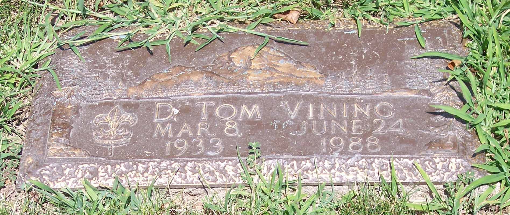
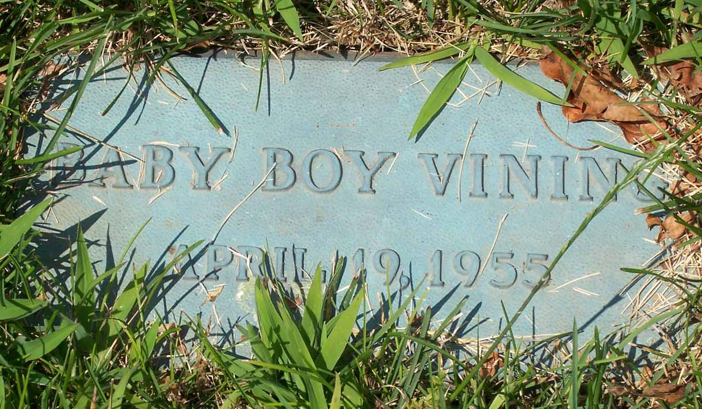
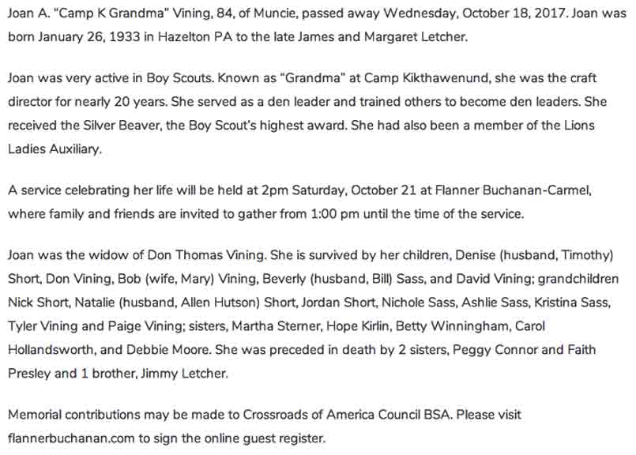

Documentation for Donald Thomas Vining - Joan A. Letcher
Joan A. (Letcher) Vining:
Death Data
Gravestones for Donald Thomas Vining and infant son, in Elm Ridge Cemetery, Muncie, Indiana. (Photos taken by Charlotte Vining Stradling)


Obituary for Joan A. (Letcher) Vining (from Flanner Buchanan website):
